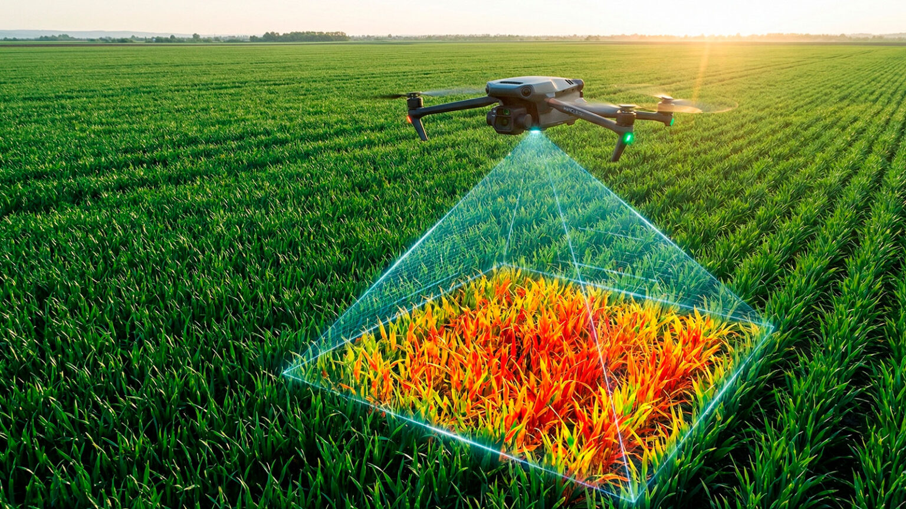
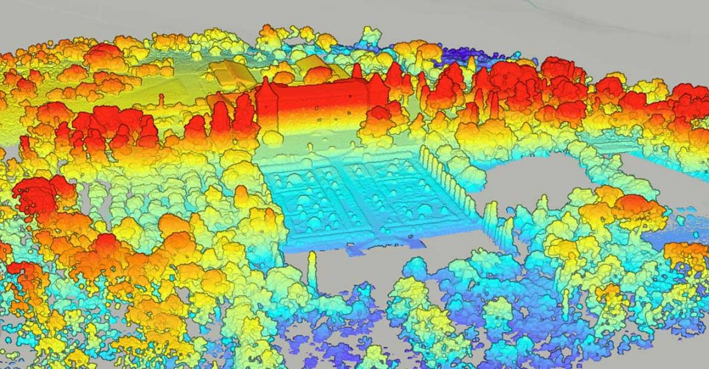
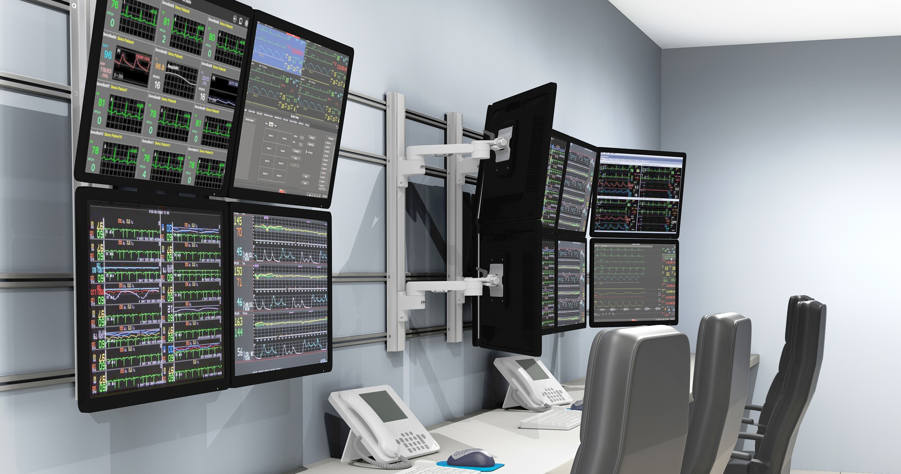

Capturas multiespectrales para optimizar el riego y el rinde en campos de soja.

Procesamiento LiDAR en la nube para relevamiento de infraestructura terrestre.

Estación GCS con radioenlace bidireccional seguro y alta disponibilidad.